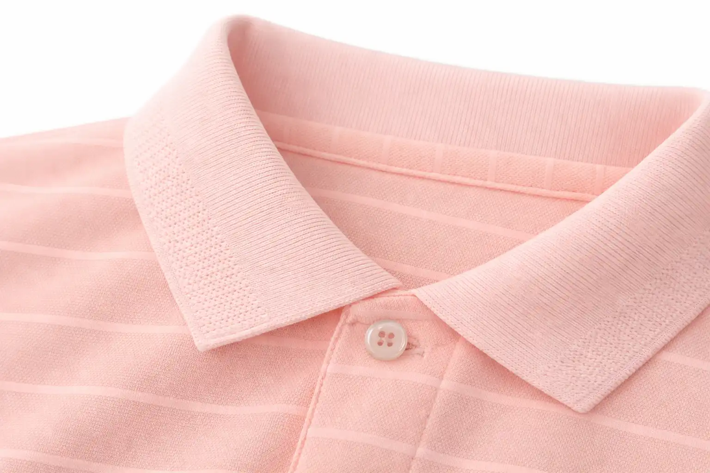
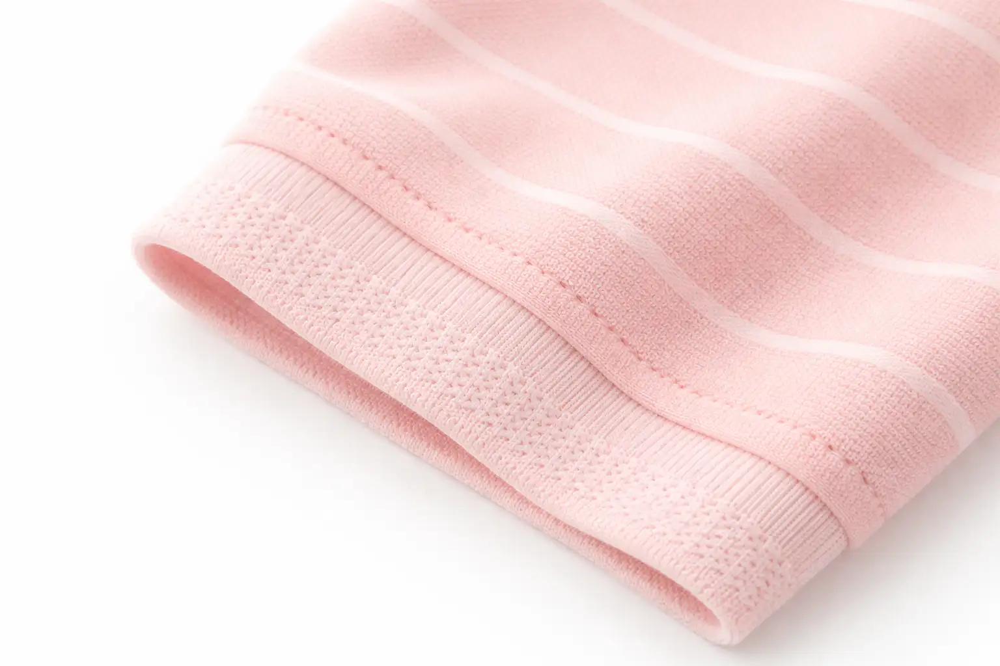

Curtains
Durable, wrinkle-resistant warp knits with excellent drape and light filtration.
Request Sample

Interlock
Double-knit fabric with smooth finish on both sides. Stable and structured for polos and dresses.
Request Sample
Rib
Textured stretch fabric with vertical lines. Ideal for cuffs, collars, and necklines.
Request Sample
Single Jersey
Classic knit with smooth face and textured back. Perfect for t-shirts and casual wear.
Request Sample


Garment Fabric
Versatile fabric available in both warp and circular knitting. Smooth finish, excellent drape.
Request Sample
Sportswear
Premium performance fabric available in both warp and circular knitting. Breathable, stretchable.
Request Sample
Suitings & Shirtings
Premium suiting and shirting fabrics available in both warp and circular knitting.
Request Sample